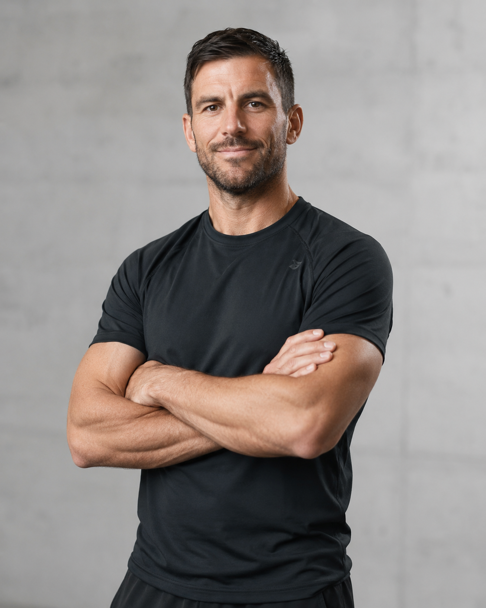

Kovács Péter
Kovács Péter már 25 éve foglalkozik a sporttal, és mindent megtesz tanítványai fejlődéséért. Fiatal korában háromszoros magyar bajnok volt, szakmai hozzáértése pedig világszínvonalú. Ő vezeti a kezdő és középhaladó edzéseket hétfőtől péntekig, minden nap. Edzésein nagy hangsúlyt kapnak az alaptechnikák, a helyes mozgás, az állóképesség és az önbizalom fejlesztése. Péter türelmesen, mégis határozottan segíti a sportolókat, hogy biztonságosan és fokozatosan fejlődjenek. Ha most szeretné megismerni a box világát, ő a legjobb választás az első lépésekhez.Edzésein külön figyelmet fordít arra, hogy minden tanítvány biztos alapokat szerezzen, mielőtt nehezebb technikákra lépne tovább. Célja, hogy a kezdők magabiztosan, sérülésmentesen és fokozatosan fejlődjenek a box világában.